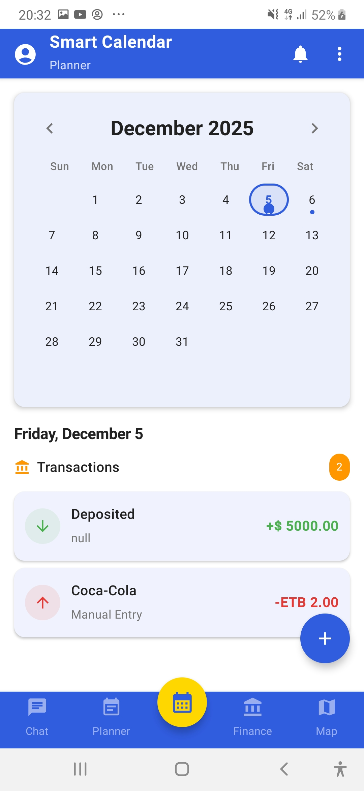
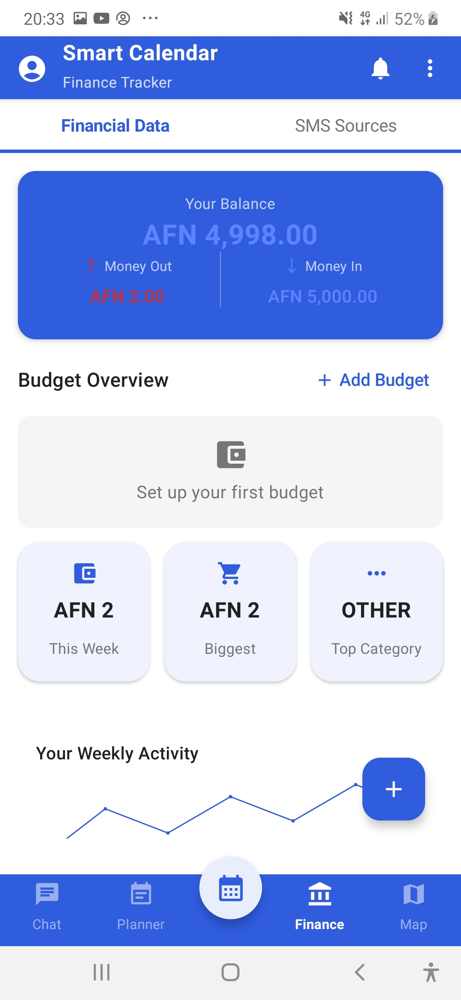
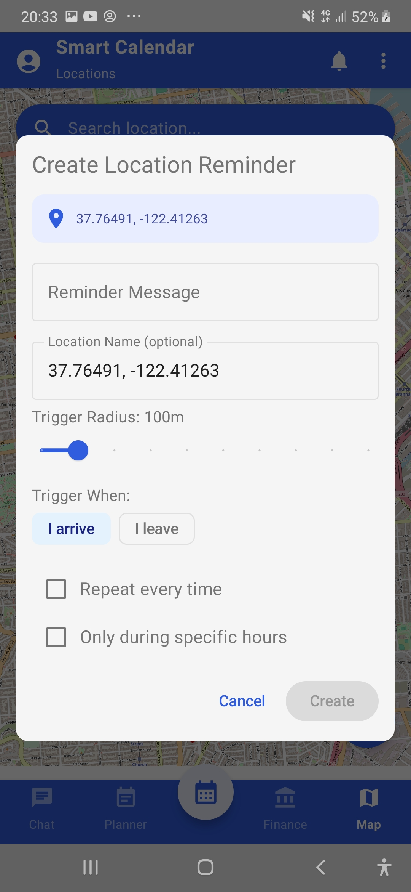
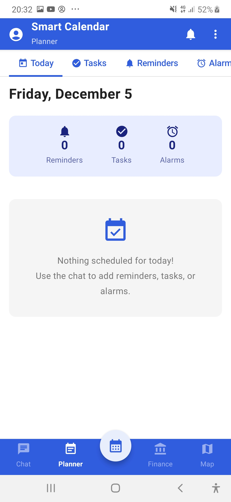
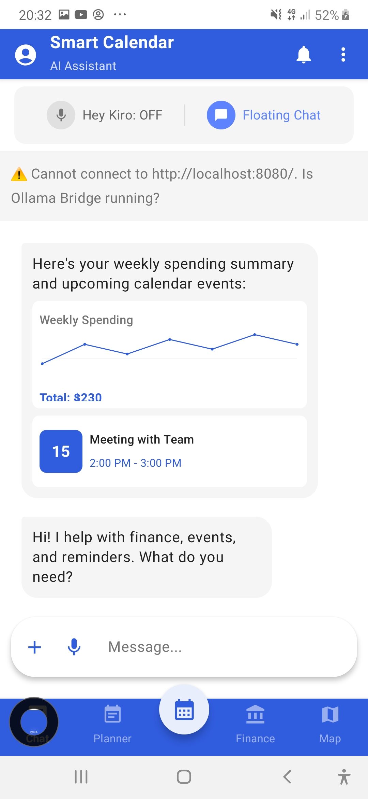

Case Study · On-Device Automation
GPT Calendar replaces five separate apps — calendar, reminders, finance tracking, location alerts, and tasks — with one voice-first Android assistant whose AI runs entirely on the phone.





If routine steps keep eating your team's time — on mobile or desktop — tell me about them and I'll assess whether they're a fit for automation.
Describe Your Workflow